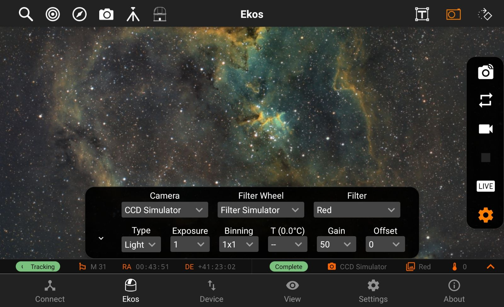
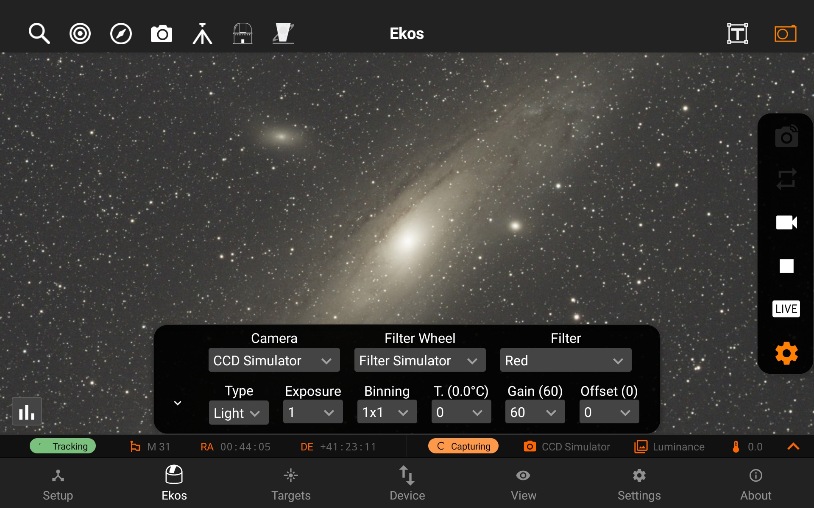
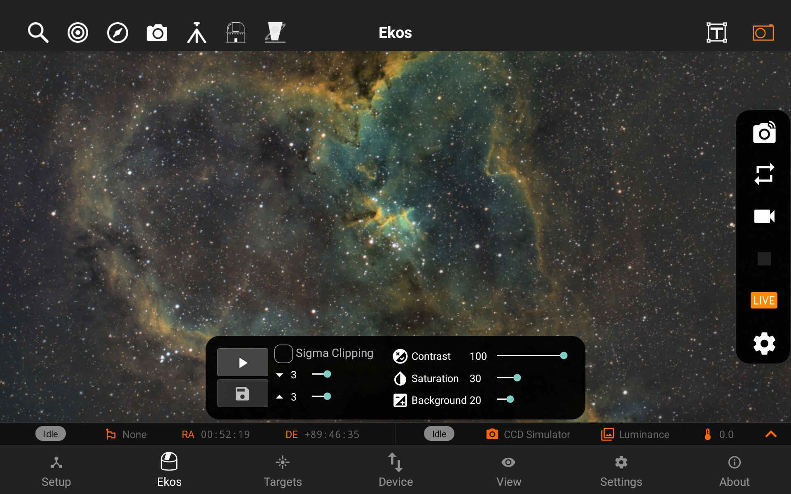
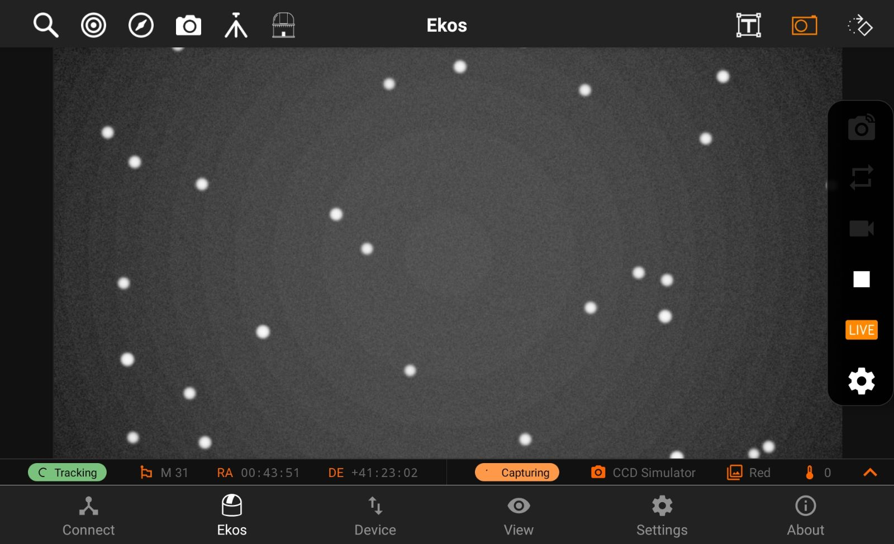

Camera
Camera quick controls allows you to control your camera quickly and easily, it has the following features:
- Capture Preview
- Looping
- Video Streaming
- Live Stacking
- Quick Settings
Editing Camera Settings
You can quickly take custom preview captures or loop frames by tweaking the settings in the quick settings bar by tapping on the Quick Settings button. The quick settings bar can be expanded by tapping on the up expand arrow on the left side of the bar. Note: choosing a temperature will set the temperature immediately.
Quick Settings button. The quick settings bar can be expanded by tapping on the up expand arrow on the left side of the bar. Note: choosing a temperature will set the temperature immediately.

Capturing a preview image, looping or video streaming
You can capture a preview image by tapping on the Camera button. Looping can be done as well by tapping on the Loop button (repeat icon). You can also stream live video from your camera by clicking on the Video Streaming button. An animated circular progress icon will show the progress of the current capture and will show you when the image is being downloaded to the app by showing a green cloud download icon.
You can stop the capturing process by tapping on the  Stop button anytime while it's capturing.
Stop button anytime while it's capturing.

Live Stacking
StellarMate also features Live Stacking, which can be turned on by clicking on the LIVE button. This will start live stacking process in which images are stacked to increase the signal to noise ratio. It utilizes a median stacking algorithm and automatic background extraction follow by contrast adjustments to bring out the details.

Sigma clipping allows filtering images out the extremes of the distribution. The mean and standard deviation are calculate from the first three captures and the following captures are filtered using the Livestacker with Sigma Clipping. To give an idea of it works the follwing diagram shows where the the clipping occurs. The user is able to change the slower and supper (default is set to 3) to adjust the clipping. There are many sources of light that may be present in the data and the Sigma Clipper gives the user the ability to clip the outlying data according to their needs.

https://pixinsight.com/doc/tools/ImageIntegration/ImageIntegration.html
